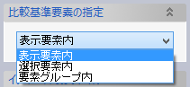
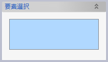
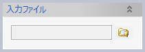
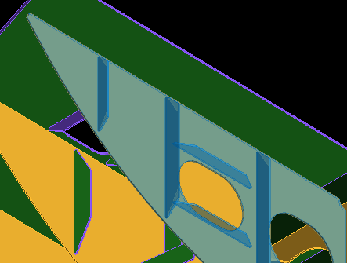
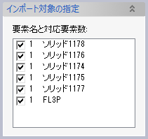
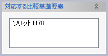

参照形状インポート
モデリングの基準となる要素をインポートします。プレビューを利用して、すでにモデル内にある基準要素と比較しながらインポート対象を選択することができます。インポートされた要素は関連性を持たないため定義編集はできませんが、データ量は小さくなります。
操作方法
インポート対象ファイルと、形状の比較基準となる要素とを選択してOKをクリックすると、ファイルに含まれるソリッド要素の一覧が表示されます。同時に形状のプレビューや、基準要素との対応関係（干渉の有無）も表示されます。インポートしたいソリッドをチェックボックスで選んでインポート操作を実行すると、関連性のない状態でインポートされます。インポートと同時に既存ソリッドとの入れ替え操作を実行することもできます。
パラメータ
- 比較基準要素の指定

インポートするソリッドと形状を比較したい要素の選択方法を指定します。
- 表示要素内
モデルに含まれるソリッド要素のうち、表示がOnになっている要素を対象とします。
- 選択要素内
対象となるソリッド要素を選択します。

- 要素グループ内
選択した要素グループに含まれる全てのソリッド要素を対象とします。

- 表示要素内
- 入力ファイル
3Dモデルファイル（.evomdl）またはParasolid形式ファイルを選択できます。
インポート対象の指定
インポート対象ファイルを指定してOKをクリックすると、ファイル内要素のプレビューと、インポートのパラメータを指定するためのダイアログボックスが表示されます。

（プレートにホールを追加して補強板の形状を変更したファイルをインポートしようとした例）
- インポート対象の指定

インポート対象ファイルに含まれるソリッドのうち、比較基準要素と形状の異なる要素がインポート対象としてリスト表示されます。
チェックボックスでインポート対象を指定します。チェックした要素は形状がプレビュー表示されます。
要素を選択すると、その要素に対応する比較基準要素の名前が下の「対応する比較基準要素」欄に表示されます。チェックボックスの隣の数字は「対応する比較基準要素」の数を表します。要素間の対応関係は、要素IDが一致するかどうか、または形状に重なった部分があるかどうかで決定されます。
- 対応する比較基準要素

「インポート対象の指定」欄で選択したインポート対象要素に対応する比較基準要素が表示されます。
- 同一形状要素（インポート対象外）
インポート対象ファイルに含まれるソリッドのうち、比較基準要素と形状が同一のものについてはインポート対象外となります。
- インポート先グループ
インポート時に要素を指定したグループに追加できます。
- 詳細設定
「グループ構造を再現する」チェックボックスをOnにすると、インポート先グループを指定してインポート操作を実行する際に要素の既存グループ構造を保ったままにします。チェックボックスがOffだと、指定グループの直下に要素が追加されます。
- 操作
以下の3種類の操作を実行できます。
- インポート
「インポート対象の指定」欄で指定した要素をインポートします。
- インポート＋ボディ入れ替え
インポート実行時に、インポート対象要素のうち「対応する比較基準要素」が存在するものについては、ソリッドボディの入れ替えを実行します。入れ替えを実行すると、それまで比較基準要素と関連性を持っていた要素が、比較基準要素のかわりにインポートされた要素を参照するようになります。
入れ替えを実行するためには要素同士が一対一の関係である必要があります。対応要素数が2以上の要素があると、警告メッセージが表示されて処理は実行されません。
- 対応要素をグループに追加
「対応する比較基準要素」欄に表示されている要素を指定したグループに追加できます。

- インポート